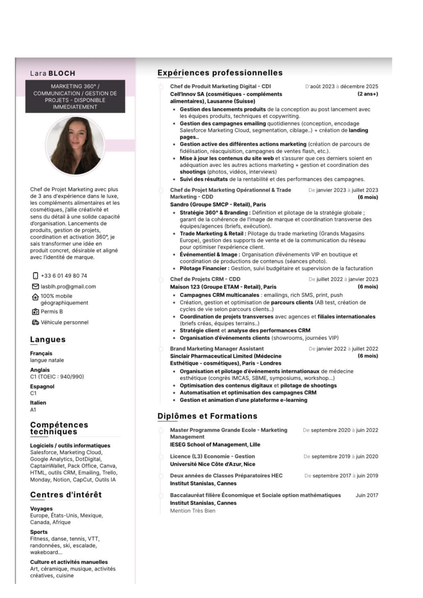

En 2026, une intelligence artificielle lit ton CV avant tout humain. Si elle dit non, personne ne te lira jamais. Voici l'analyse du CV de Lara, et pourquoi il finit dans le vide.
Avant qu'un recruteur ne voie ton CV, un robot le scanne en quelques secondes. Voici exactement ce qui se passe.
L'ATS extrait le texte de ton CV. Si ton format a des colonnes, des tableaux, une photo ou des icones, il lit n'importe quoi. 43% des CV ont des erreurs de parsing.
L'IA compare ton CV a la fiche de poste. Elle cherche les competences requises, les outils, les annees d'experience. Chaque mot-cle a un poids : obligatoire (fort), prefere (moyen), contextuel (faible).
Le systeme donne un score : nombre de mots (25 pts), competences tech (35 pts), experience (40 pts). Seuil de passage : 80/100. En dessous, rejet automatique.
70% des entreprises laissent l'IA rejeter sans aucune supervision humaine. Si ton score est sous le seuil, ton CV disparait. Pas de notification, pas d'email. Le trou noir.
Chaque zone rouge = un probleme qui fait rejeter le CV par l'IA. Survolez les zones pour voir le detail.

L'ATS lit ligne par ligne, de gauche a droite. Avec 2 colonnes, il melange tout : ton nom se retrouve colle a une experience, tes competences disparaissent. La bande noire est traitee comme une image — tout ce qui est dessus est ignore.
Certains ATS tentent d'analyser la photo comme du texte et plantent. Meme ceux qui la sautent perdent la structure du document autour. En France, la photo n'est pas obligatoire et les systemes IA modernes l'ignorent completement.
"MARKETING 360 / COMMUNICATION / GESTION DE PROJETS - DISPONIBLE IMMEDIATEMENT" — c'est trop large. L'ATS cherche un match exact avec l'intitule du poste. "Chef de Projet Marketing Operationnel" matcherait. "Marketing 360" ne matche rien. Et "DISPONIBLE IMMEDIATEMENT" n'a aucune valeur pour le scoring.
Le paragraphe a gauche est du texte narratif sans aucun mot-cle technique ni chiffre. L'ATS ne comprend pas la prose — il cherche des bullet points avec des termes precis. Et comme c'est dans la sidebar, il ne le lit probablement meme pas.
Les icones (telephone, email, voiture) ne sont pas du texte — l'ATS ne les lit pas. S'il ne peut pas extraire ton email ou ton numero, il ne peut pas te contacter. Certains systemes rejettent directement les CV sans coordonnees detectees.
Salesforce, Marketing Cloud, Google Analytics, HTML, CRM — toutes ces competences sont dans la colonne gauche que l'ATS ne parse pas. Elles existent, mais l'IA ne les voit pas. C'est comme avoir les bonnes reponses ecrites a l'envers.
"Gestion des campagnes emailing" — ca, 500 autres candidats Bac+5 l'ecrivent aussi. Ce qui differencie : "Pilotage de 15 campagnes/mois, taux d'ouverture +23%, ROI +18%". Les chiffres sont le seul moyen de sortir du lot, autant pour l'IA que pour l'humain.
Prepa HEC + Master IESEG + TOEIC 940 + trilingue FR/EN/ES + experiences chez SMCP, ETAM, Sinclair Pharma. Le parcours est coherent et les competences sont reelles. Le probleme n'est pas le profil — c'est l'emballage qui empeche l'IA de le voir.
Le seuil de passage est 80/100. En dessous, aucun humain ne lira jamais ce CV.
Le marche du travail a change. Les regles de 2020 ne fonctionnent plus.
Workday (39%), Taleo (22%), SuccessFactors (13%), iCIMS (7%). En France : Taleez, Flatchr, Cegid. Meme les PME a 50 salaries utilisent un ATS des 49 euros/mois. Ton CV passe par un robot, pas par un humain.
7 entreprises sur 10 laissent l'IA decider seule. Pas de deuxieme chance, pas de "on va quand meme regarder". Si l'algorithme dit non, c'est non. Et il ne t'enverra meme pas un email pour te prevenir.
5 minutes. Ton CV est parse, score, compare a des centaines d'autres, et classe. Un recruteur humain passe 7 secondes sur un CV. L'IA fait tout ca sans que personne n'intervienne.
Colonnes, tableaux, graphiques, photos, icones, templates Canva avec calques invisibles. Presque la moitie des CV sont mal lus avant meme d'etre evalues. Le format tue le contenu.
Depuis 2026, l'AI Act europeen classe le recrutement IA en "haut risque". Les rejets automatiques sans humain sont theoriquement non conformes. Mais dans la pratique, presque aucune entreprise n'est encore en conformite.
Les nouveaux ATS utilisent des Large Language Models. Ils ne matchent plus juste des mots-cles — ils comprennent le contexte. Mais si le format empeche le parsing, meme le meilleur LLM ne peut rien faire.
A gauche : ce qu'elle ecrit. A droite : ce qu'il faudrait ecrire pour passer le filtre IA.
Ces 3 structures sont conçues pour scorer 85+ sur 100 dans n'importe quel ATS. Meme contenu que le CV original, mais reformate pour que l'IA le lise.
Chef de Projet Marketing avec 3+ ans d'experience en marketing operationnel, brand content, CRM et trade marketing dans les secteurs cosmetique, retail luxe et complements alimentaires. Expertise en lancement produits, campagnes emailing (Salesforce Marketing Cloud), coordination transverse agences/equipes internationales et pilotage d'evenements.
Francais (natif) • Anglais C1 (TOEIC 940/990) • Espagnol C1 • Italien A1
Le format le plus sur. 1 colonne, headers standards, zero decoration. Fonctionne avec 100% des ATS du marche (Workday, Taleo, iCIMS, Greenhouse). C'est le format recommande par Harvard Business School et Jobscan.
3+ ans en marketing digital, CRM et trade marketing. Specialisee en campagnes emailing via Salesforce Marketing Cloud, lancement produits et coordination d'agences. Doubles competences operationnel + strategique acquises en grands groupes (SMCP, ETAM, Sinclair Pharma) et PME innovantes.
CRM/Marketing : Salesforce Marketing Cloud, DotDigital, CaptainWallet, Google Analytics, HTML, Emailing, A/B Test, Segmentation, Landing Pages, SEO
Gestion : Trello, Monday, Notion, Pack Office, Canva, CapCut, Outils IA
FR natif | EN C1 (TOEIC 940) | ES C1 | IT A1 — Voyages (Europe, USA, Afrique) | Fitness, danse, tennis, escalade | Art, ceramique, cuisine
Un header avec fond sombre pour le style, mais le reste est en 1 colonne pure. Le header reste parsable car c'est du texte sur fond colore, pas une image. Bon compromis entre design et compatibilite ATS. Format inspire des recommandations de SHRM (Society for Human Resource Management).
Professionnelle du marketing operationnel avec 3 ans d'experience en lancement produits, campagnes CRM multicanales et trade marketing. Expertise confirmee sur Salesforce Marketing Cloud, coordination d'equipes transverses et pilotage d'evenements internationaux. Parcours en grands groupes retail (SMCP, ETAM) et PME innovantes (cosmetique, complements alimentaires).
Salesforce Marketing Cloud • DotDigital • CaptainWallet • Google Analytics • CRM multicanal • Emailing • Trade marketing • Brand content • A/B testing • HTML • Landing Pages • SEO • Trello • Monday • Notion • Canva • CapCut • Pack Office • Outils IA
Voyages (Europe, Etats-Unis, Mexique, Canada, Afrique) • Fitness, danse, tennis, VTT, escalade, ski • Art, ceramique, musique, cuisine
Le format le plus epure. Police serif (Georgia), zero decoration, texte centre en haut. C'est le format prefere des cabinets de conseil, Big 4 et banques d'affaires. Score ATS maximal car absolument rien ne gene le parsing. Recommande par les career services de HEC, ESSEC et IESEG.
Toutes les donnees de cet audit sont basees sur des etudes academiques, des rapports industriels et des textes reglementaires verifiables.
Etude de reference sur les millions de candidats qualifies filtres par les ATS. Documente comment les systemes automatises rejettent systematiquement les profils non lineaires.
Rapport annuel sur l'adoption des ATS : 97.8% des Fortune 500 ont un ATS detecte. Workday #1 (39%), SuccessFactors #2 (13.2%), Taleo #3.
Society for Human Resource Management. Confirme Workday comme leader enterprise. 44% des organisations utilisent l'IA pour le screening de CV (SHRM Talent Trends 2025).
Chercheurs de Stanford : les outils IA de screening donnent des scores superieurs aux hommes blancs ages. Les noms a consonance afro-americaine sont defavorises dans 100% des 27 tests de biais.
Depuis 2026, le recrutement IA est classe "haut risque" par l'AI Act. Obligations : transparence, supervision humaine, audit des biais, information des candidats. Tout rejet automatique sans humain est non conforme.
Enquete : 82% des entreprises utilisent des outils IA pour le screening, avec la plupart operant sans supervision humaine au stade du rejet. Les LLM remplacent le matching par mots-cles.
Analyse technique du scoring ATS : word count (25 pts), skills (35 pts), experience (40 pts). Seuil de passage : 80%. Details sur le systeme de poids des mots-cles (must-have, nice-to-have, contextuel).
Discussion communautaire (800+ commentaires) sur l'etude Harvard. Temoignages de recruteurs, developpeurs d'ATS et candidats. Confirme que 43% des CV ont des erreurs de parsing.
Guide officiel de France Travail (ex-Pole Emploi) sur les ATS. Recommandations gouvernementales pour adapter son CV aux logiciels de recrutement automatises.
Class actions en cours contre des entreprises utilisant l'IA pour rejeter des candidats sans supervision humaine. Cadre juridique en evolution rapide.
Guide complet sur l'etat de l'art du screening IA en 2026 : integration ATS, biais algorithmiques, gouvernance et conformite reglementaire.
Analyse du "trou noir du CV" : pourquoi le screening IA echoue autant pour les candidats que pour les employeurs. 52% des recruteurs retrouvent manuellement d'excellents candidats dans la pile des rejetes.